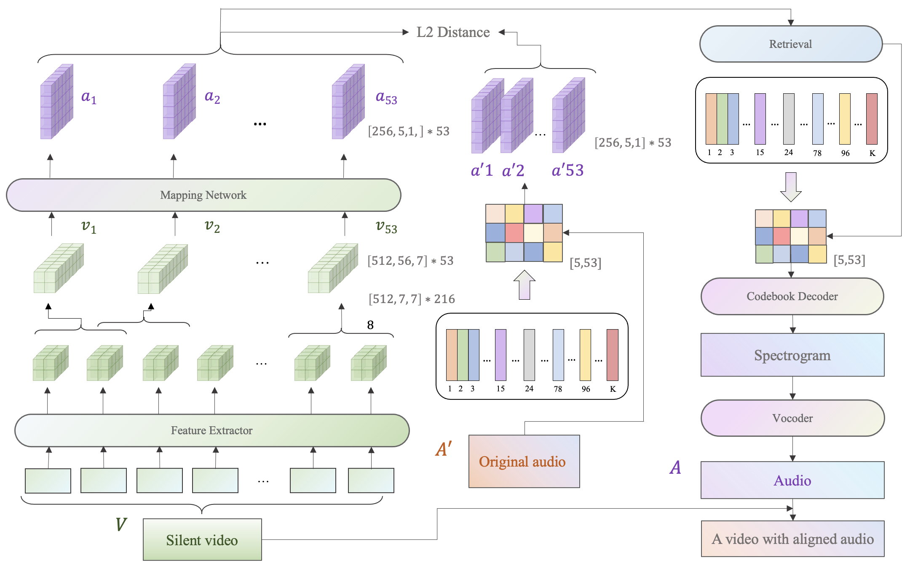
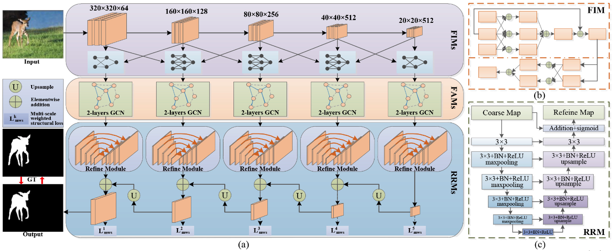

|

|
Sound Generation Method based on Timing-aligned Visual Feature Mapping
Zhifeng Xie, Luoyi Sun, Yuzhou Sun, Chunpeng Yu, Lizhang Ma
ChinaMM, 2022,
[pdf]
New framework for high-quality sound generation, matching to silent videos in content and timing alignment.
|
|

|
Multi-Scale Graph Convolutional Interaction Network For Salient Object Detection
Wenqi Che, Luoyi Sun, Zhifeng Xie, Youdong Ding, Kanli Han
ICIP, 2021,
[pdf]
Proposed the multi-scale graph convolutional interaction network (MGCINet), and get the SOTA on five benchmark datasets.
|
|
|
Application Design and Development of Video Stabilization based on Image Processing
Luoyi Sun
2019
Proposed the multi-scale graph convolutional interaction network (MGCINet), and get the SOTA on five benchmark datasets.
|
|
|
Massive and Highly Concurrent Library Management System Design and Development based on Open Source Relational Database
Luoyi Sun, Lei Feng, Ling Hai
2018
Proposed the multi-scale graph convolutional interaction network (MGCINet), and get the SOTA on five benchmark datasets.
|
|
|
Multi-Scale Graph Convolutional Interaction Network For Salient Object Detection
Yu Cao, Zhi Sun, Luoyi Sun, Shuangqi Yu
2017
Proposed the multi-scale graph convolutional interaction network (MGCINet), and get the SOTA on five benchmark datasets.
|
|
Honors
- Second Class Prize, National Post-Graduate Mathematical Contest in Modeling, 2021
- First Class Scholarship, Shanghai University (Top 5%), 2021
- First Class Scholarship, Shanghai University (Top 5%), 2020
- Second Class Scholarship, Yunnan University (Top 10%), 2018
- Outstanding Student leaders, Yunnan University (Top 5%), 2018
- Second Class Scholarship, Yunnan University (Top 10%), 2017
- Outstanding Student leaders, Yunnan University (Top 5%), 2017
|
|
Skills
- Coding : Python (Proficient); C、Java (Familiar); Pytorch (Proficient)
- Interests : Multi-Media & Digital Media Processing; Multimodal learning, Cross-modal Generation
- English : CET-6, Language Service Competence Accumulation & Training(S100 Certification)
- Software : Adobe Photoshop, Premiere, Audition, Maya, 3Ds Max, Unity
|
|
Hobbies
- Photography, Piano, Travelling, Singing
|
|
{kind=link}